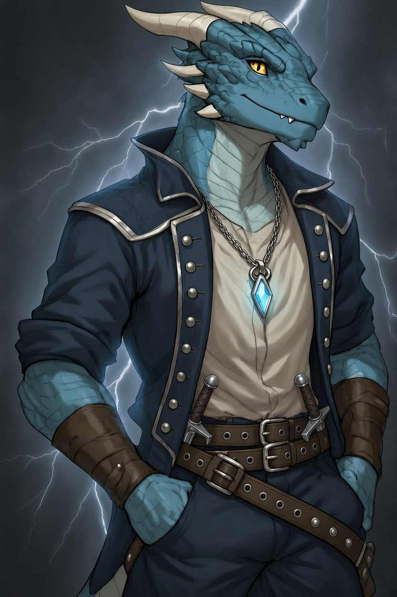

Диконус
драконорождённый
чародей дикой магии
Готов
Внешний вид
Молодой драконорождённый со светло-голубой чешуёй, на голове - два рога цвета слоновой кости. На нём белая, всегда застёгнутая рубашка, поверх которой надета полукуртка глубокого синего цвета с серебристыми вставками и высоким воротником, а также двумя рядами пуговиц с двух сторон; тёмно-синие штаны поддерживает пара стильных ремней, а третий, для красоты, свисает набок; на его ногах специально подогнанные высокие чёрные сапоги с серебряными бляшками. Особенно бросается в глаза его амулет: ромбовидный голубой драгоценный камень в тонкой оправе на платиновой цепочке. В общем и целом, при взгляде на него создаётся впечатление если не знатного, то как минимум уверенного в себе индивида.
Дополнительные сведения
В детстве подвергся неудачному магическому ритуалу, по итогам которого его тело стало нестабильным магическим резервуаром. Это позволило ему быть с магией на "ты", но принесло и голод, который заставляет его не только больше есть, но, временами, и больше желать.
Известен
- Содействовал в убийстве лича близь города Трибор
- Состоял в группе, что проводила Фелинку, подручную графа Оливера, до пункта назначения — резиденции графа в Пепельной горе
- Был вынужден участвовать в предприятии по подрыву одного из пивных производств Багманов
Предыстория
Полная предыстория в Google Docs
Для чего здесь? Чтобы продолжать развивать свои способности владения магией и спасти мир от армии нежити, конечно! И, возможно, получится узнать что-то о собственном прошлом...